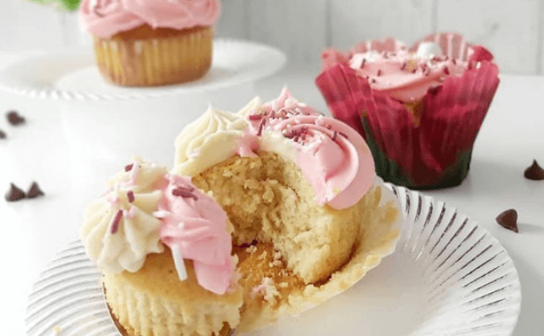

Otras Recetas Populares

Pastel de Chocolate Clásico
Un delicioso pastel de chocolate con capas de ganache y crema de chocolate.

Galletas de Avena y Pasas
Crujientes galletas de avena con un toque de canela y pasas jugosas.

Cupcakes de Vainilla con Buttercream
Esponjosos cupcakes de vainilla decorados con un suave buttercream de vainilla.